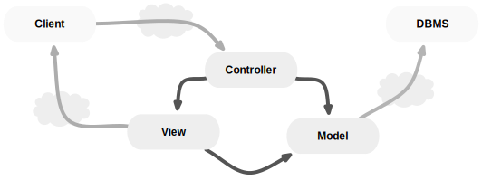
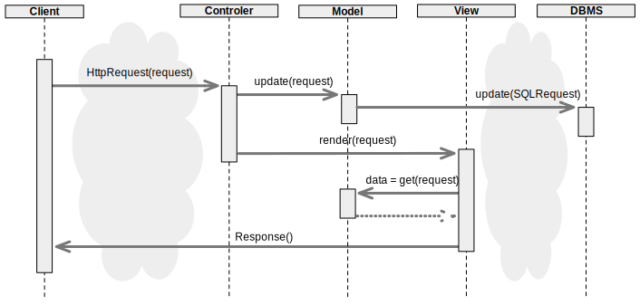
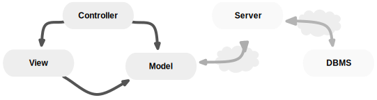
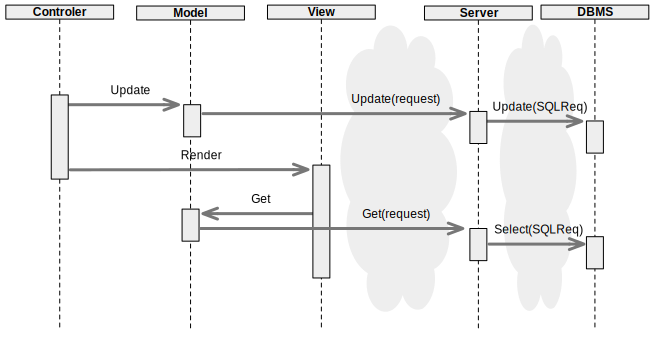

Web Frameworks
- Client-side/Server-side Frameworks
- NoSQL DataBases
Web development is getting dominated by the MVC (Model View Controller) design pattern. Both on the server and client side.
Web development relies on well established protocols and standards.
- HTTP
- REST
Common problems need to be addressed
- Security
- Browsers' compatibility
Tools and frameworks help in every steps
- MVC Frameworks (Client/Server-Side)
- Testing Frameworks
- Continuous integration platforms
- Task Runners
- Scaffolding
- ...
We focus here on node.js and the javascript ecosystem.
Hypertext Transfer Protocol (HTTP)
- Application-level protocol for distributed systems. Generic and stateless.
- Request message (from client to server)
- Response message (from server to client)
- Text-based messages / Multipurpose Internet Mail Extensions (MIME) format
- Messages :
generic-message = start-line
*(message-header CRLF)
CRLF
[ message-body ]
start-line = Request-Line | Status-LineHTTP Headers and Entities
message-header = field-name ":" [ field-value ]
field-name = token
field-value = *( field-content | LWS )
field-content = <the OCTETs making up the field-value
and consisting of either *TEXT or combinations
of token, separators, and quoted-string>Example header:
Host: tools.ietf.org
Connection: keep-alive
Cache-Control: max-age=0
Accept: text/html,application/xhtml+xml,application/xml;q=0.9,*/*;q=0.8
Accept-Encoding: gzip,deflate,sdch
Accept-Language: en-US,en;q=0.8
Accept-Charset: UTF-8,*;q=0.5
User-Agent: Mozilla/5.0 (Macintosh; Intel Mac OS X 10_8_2) AppleWebKit/537.17 (KHTML, like Gecko) Chrome/24.0.1312.57 Safari/537.17HTTP Requests
From the client to the server
Request = Request-Line
*(( general-header
| request-header
| entity-header ) CRLF)
CRLF
[ message-body ]Request Line
Request-Line = Method SP Request-URI SP HTTP-Version CRLFHTTP Methods
- "OPTIONS": information about the communication options available
- "GET": retrieve whatever information is identified by the Request-URI
- "HEAD": same as "GET" message-body in the response
- "POST": append entity to the existing Request-URI
- "PUT": store entity as the new Request-URI
- "DELETE": delete existing Request-URI
- "TRACE" : see what is being received at the other end of the request chain
- "CONNECT" : for use with a proxy that can dynamically switch to being a tunnel (e.g. SSL tunneling).
HTTP Responses
Response = Status-Line
*(( general-header
| response-header
| entity-header ) CRLF)
CRLF
[ message-body ]
Status-Line = HTTP-Version SP Status-Code SP Reason-Phrase CRLFStatus Codes:
- 1xx: Informational - Request received, continuing process
- 2xx: Success - The action was received, understood, and accepted
- 3xx: Redirection - Further action must be taken to complete the request
- 4xx: Client Error - The request contains bad syntax or cannot be fulfilled
- 5xx: Server Error - The server failed to fulfill an apparently valid request
Representational State Transfer
- REST is a style of software architecture for distributed systems on top of HTTP.
- Each resource are accessed through one unique request (URI).
- Requests are stateless (identification within the URI)
- Resources are accessed one by one or as collections
- RESTful web service (RESTful web API)
RESTful Web Services
- RESTful API and HTTP methods
| Resource | GET | PUT | POST | DELETE |
|---|---|---|---|---|
| Collection URI | List elements | Replace entire collection | Create new element in collection | Delete collection |
| Element URI | Retrieve one element | Replace existing element | Generally not used | Delete one element |
- Plural may indicate a collection e.g.
http://example.com/emails/ - An id may indicate an element e.g.
http://example.com/email/17/ - Can be prefixed with an API version e.g.
https://api.twitter.com/1.1/statuses/home_timeline.jsonor a keyword (api) in order to distinguish from normal web pages. home_timeline.json
Security
Too many vulnerabilities exist... But developers are responsible for their code!
Common Attacks
- Cross-Site Request Forgery (CSRF)
- Cross-site scripting (XSS)
- SQL injection
Common Measures
- Anti-CSRF tokens
- Forms Timeouts
- Escape users inputs
Reduce vulnerability... Use frameworks!
The Model–View–Controller Design Pattern
- Improve the separation of concerns
- Facilitate automated unit testing
- Facilitate team work
- MODEL
- Holds the data
- Links to persistent storage (DBMS)
- Ignores other components
- VIEW
- Representation of data
- What users see
- May know the Model
- CONTROLLER
- Handles users requests
- Updates Model data
- Triggers Views
Classical Server-Side MVC Schema

The 3 MVC parts run on the server side.
Server-Side MVC Sequence

Client-Side MVC Schema

The 3 MVC parts run on the client side. The server is just a gateway for the DBMS.
Client-Side MVC Sequence

Tools for the JS ecosystem
- JS Interpreter:
- Node (nodejs.org)
- Dependencies Management:
- Task Runner:
- Grunt (gruntjs.com)
- Gulp, Brunch, ...
- Projects Scaffolding:
- Yeoman (yeoman.io)
MVC Frameworks
Server Side MVC Frameworks
many frameworks in many (all?) languages
Java
- JavaServer Faces (Oracle)
- Spring MVC
- Struts 2
- Stripes
- Wicket (Apache)
- GWT (Google)
- And off course the JAVA EE ecosystem...
PHP
- Zend Framework (IBM)
- Symphony
- CakePHP (Open Source)
- ...
Python
- Django (♥)
- web2py
- Zope
Ruby
- Ruby on Rails
JavaScript (node.js)
- Express
Client Side MVC Frameworks
Obviously in JavaScript... actually not only
- Angular.js (Google)
- Ember.js
- Backbone.js
- Cappuccino (in its own language Objective-J, tries to emulate Apple's Cocoa style)
- Knockout.js (MVVM design pattern)
- Javascript MVC
- Batman.js
- GWT (google)
- ...
Databases
Of course classical relational DBMS hold for web apps, but NoSQL type DBMS become useful in case of:
- loosely structured (few or no foreign keys),
- no need to JOIN tables,
- Big Data.
4 types of noSQL DBMs:
- key-value stores
- object-based
- table-based
- graph-based
Famous projects:
- Project Voldemort, used by LinkedIn
- Cassandra Project, by Apache, formally used by Facebook
- Dynamo, by Amazon
- HBase, by Apache Hadoop, used by Facebook
- CouchDB (JSON store), by Apache
- MongoDB (JSON/BSON store)
- BigTable, by Google
- Neo4J (Graph Database)
Web Application Frameworks
WebApps (client-side as well as server-side) need web servers and other network related frameworks.
Web Application frameworks handle all the technical parts of the communication between client and server
- authentication
- security / cryptography
- compression
- routing
- logging
- quality of service
- sessions
- cookies
- load balancing
- ...
Express (expressjs.com). A minimalist Web framework for node.
var express = require('express');
var app = express();
app.get('*', function(req, res){
res.send('<h1>Hello World</h1>');
});
var server = app.listen(1337);Install with npm: npm install express --save
Routing with Express
In a Web App each resource is accessed through one unique request (URI) Requests are actions on elements or collections (get, create, modify, delete) Close to the idea of RESTfull applications (Representational State Transfer) Express link URIs to actions through HTTP verbs (GET, PUT, POST, DELETE)
app.get('/advert/:id?', function(req, res) {
res.send('You asked for advert' + req.param('id'));
})
.get('/search', function(req, res) { //search?q=something+fun
console.log('the search query is: ' + req.query.q); // req.param('q')
})
.post('/advert', function(req, res){ // with the bodyParser() middleware
req.body.advertTittle
})
.delete('/advert/:id?', function(req, res) {
// remove entry req.param('id') from database
});Templates with Express
- Templates allow the dynamic creation of web pages.
- Templates use a special language with variables (user data) loops and conditions
- Templates are stored in the views/ folder of the App and are called from a route.
- Templating in node with Jade: http://jade-lang.com/
In the main express configuration file (app.js):
app.set('view engine', 'jade');
var users = [{id:1, name:'Tom'},
{id:2, name:'Max'}];
app.get('/user/:id?', function(req, res){
res.render('hello_user', _.filter(users, {id:req.param('id')[0]);
});In a template file (/views/hello_user.jade):
.user
h2 Hello #{name}!Result:
<div class="user">
<h2>Hello Max!</h2>
</div>Express's Middlewares
- Extra features given to the application. They are executed at each request.
- Executed sequentially. The order is important.
- They use 4 parameters:
err: the error messagesreq: the user request objectres: the response object to be sent backnext: a callback to the next middleware to call
- Middlewares are configured with the use() function.
- logger, csrf, compression, authentication, bodyParser(forms), json, cookies, sessions, static, ...
- middleware modules are installed on a per-module basis (
npm install body-parser)
Example classical Express middleware configuration
var express = require('express');
var path = require('path');
var favicon = require('serve-favicon');
var logger = require('morgan');
var cookieParser = require('cookie-parser');
var bodyParser = require('body-parser');
var routes = require('./routes/index');
var app = express();
// view engine setup
app.set('views', path.join(__dirname, 'views'));
app.set('view engine', 'jade');
app.use(logger('dev'));
app.use(favicon(__dirname + '/public/img/favicon.ico'));
app.use(bodyParser.json());
app.use(bodyParser.urlencoded({
extended: true
}));
app.use(cookieParser());
app.use(express.static(path.join(__dirname, 'public')));
app.use('/', routes);
/// catch 404 and forward to error handler
app.use(function(req, res, next) {
var err = new Error('Not Found');
err.status = 404;
next(err);
});
/// error handler
app.use(function(err, req, res, next) {
res.status(err.status || 500);
res.render('error', {
message: err.message,
error: {},
title: 'error'
});
});MongoDB(www.mongodb.org): an object-oriented storage noSQL Database
Documents are stores in a JSON-like format (BSON: binary representation of JSON).
{
"title": "My new house in the city",
"text": "<h2>Great new house</h2>",
"plot_id": "-628141",
"available_date": "2012-12-14",
"high_priority": false,
"surface_area": 230
}- each document is identified by an
_idfield of typeObjectId()